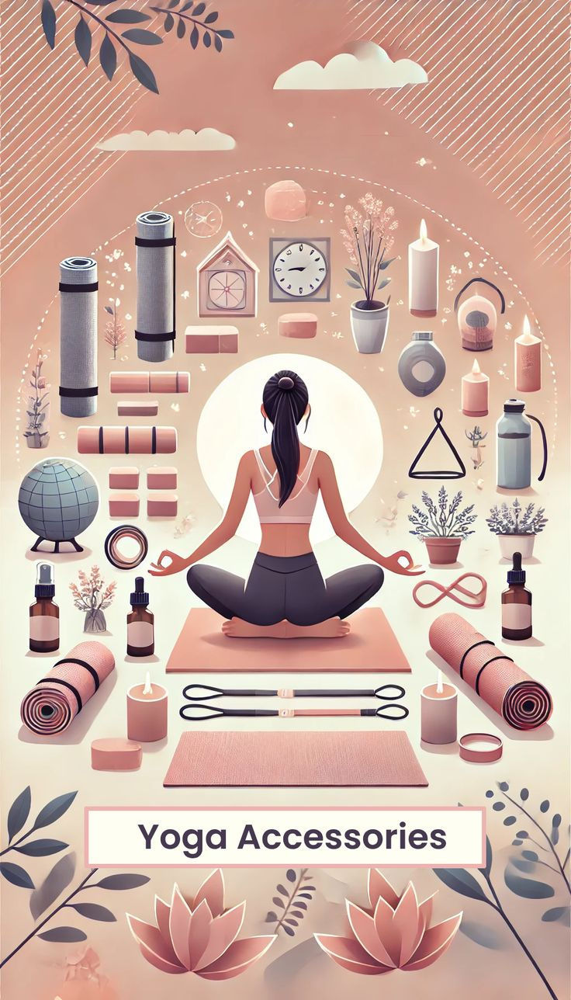

Yoga Resources
To support your yoga journey, we’ve gathered free resources designed specifically for beginners. Our printable guides cover topics like setting up a safe practice space, understanding basic alignment, and using props effectively. Short articles explain yoga philosophy in simple language, making the practice more meaningful. We also provide links to recommended books and podcasts that inspire mindfulness beyond the mat. For visual learners, our resource hub includes video tutorials that break down poses step by step. You’ll also find tips on how to build consistency, stay motivated, and adapt yoga to your lifestyle. These resources are completely free and updated regularly, ensuring that every beginner has tools to succeed. Whether you’re practicing at home or in the studio, these materials act as your companion along the journey. With Beginner Yoga Hub, knowledge is always just a click away, empowering you to grow confidently.
